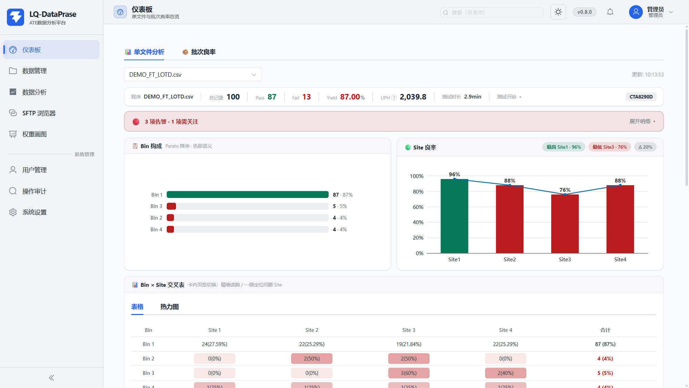
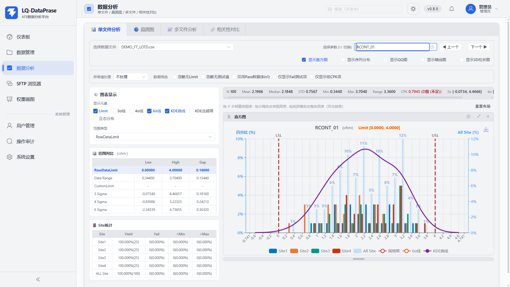
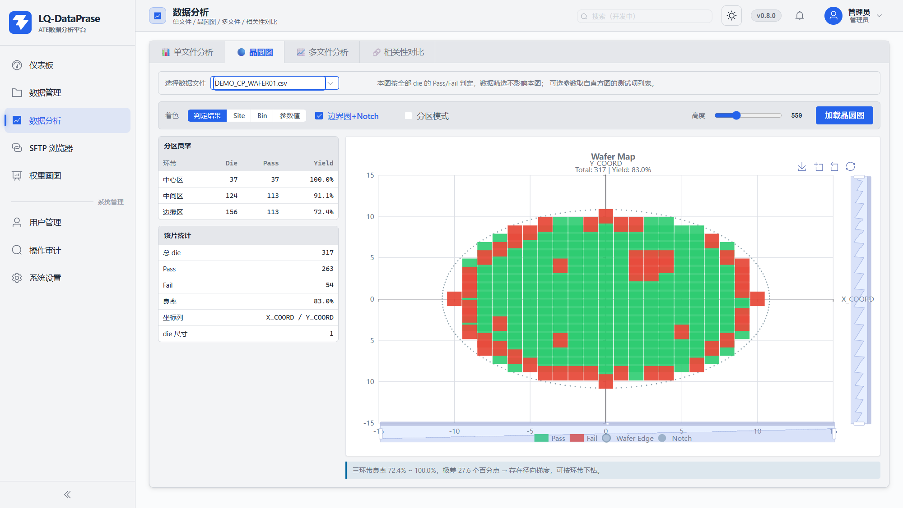
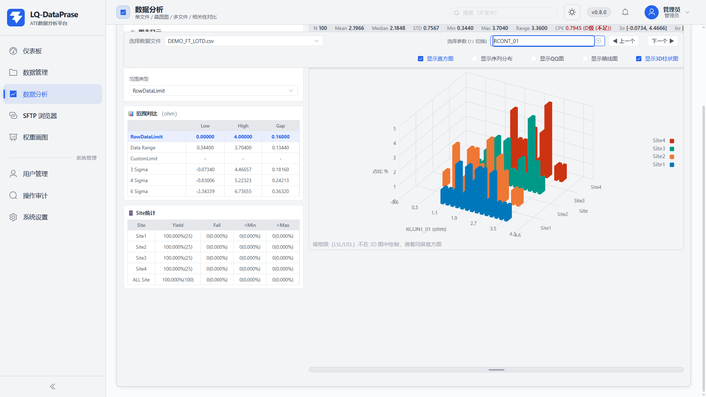
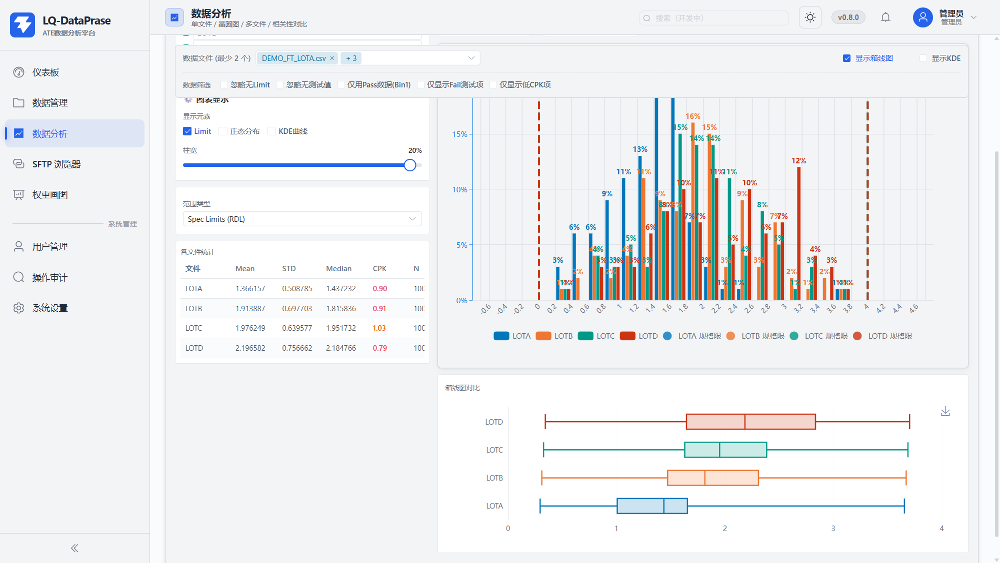
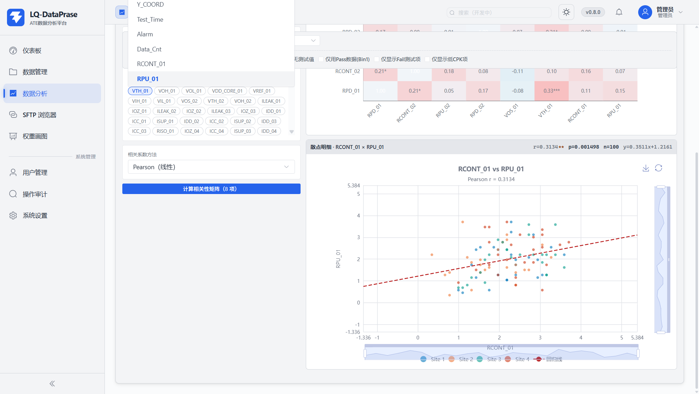
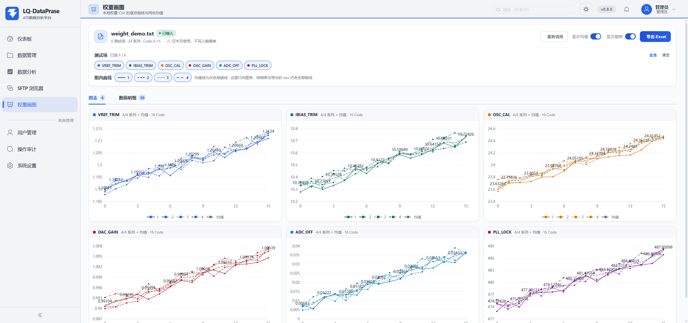
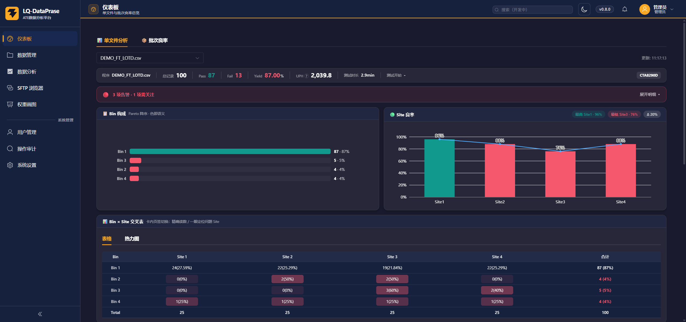

LQ-DataPrase
把半导体测试机产出的 CSV datalog，变成良率、CPK、晶圆图与批次结论——一台 Windows 桌面应用，离线完成从上传到报告的全流程。
产品概览
它解决什么问题、由什么构成、数据放在哪里、本书怎么读。
LQ-DataPrase 面向半导体量产测试（CP / FT）场景：测试机每天产出大量 CSV datalog，工程师需要快速回答「这批良率多少、哪个 Site 拖后腿、哪个参数 CPK 不足、失效集中在晶圆哪个环带」。平台把这些问题的答案做成了开箱即用的页面，而不是让工程师自己写脚本。
技术架构
功能地图
快速上手
六步走完「安装 → 第一张良率结论」。点击步骤胶囊或使用上一步 / 下一步切换。
第 1 步 · 安装与启动
- 运行安装程序（或免安装目录中的主程序），桌面生成 LQ-DataPrase 快捷方式。
- 双击启动：Electron 壳自动拉起内嵌 Django 后端并等待健康探针就绪，无需手动装 Python、Node 或数据库。
- 窗口打开即登录页；后端异常时会显示诊断页而不是黑窗口。
第 2 步 · 登录
- 输入账号密码登录；账号由管理员在「用户管理」创建与维护（见 §9 的可操作复刻）。
- 连续输错密码会触发登录限流，剩余尝试次数会记录在操作审计中。
- 登录后顶栏显示当前账号与角色，右上角可切换浅色 / 夜间主题。
第 3 步 · 上传数据
- 进入「数据管理 → 文件列表」，点击 上传文件（或直接拖拽 CSV / ZIP 到列表区）。
- ZIP 批量包自动解析为批次；单 CSV 自动识别阶段（CP / FT）、格式与测试程序。
- 需要按批分析时，勾选多个文件点 组合为批次（新建需 ≥2 个文件，追加 1 个即可）。
第 4 步 · 看仪表板
- 「仪表板 → 单文件分析」选择刚上传的文件。
- KPI 带给出总记录 / Pass / Fail / Yield / UPH / 测试时长；告警带自动提示良率、CPK、Site 差异问题。
- 切到「批次良率」看整批视角：阶段胶囊全局过滤、QA 校验条、Bin × Site 矩阵定位问题 Site。
第 5 步 · 深入分析
- 「数据分析 → 单文件分析」选参数：直方图 + KDE + 规格限 + CPK 分级一屏给出。
- 在直方图上按住左键拖框可框选子集，右键「新建子集直方图」看局部统计（§5 演示可试）。
- CP 文件切「晶圆图」看失效空间分布；多批对比切「多文件分析」；找联动关系切「相关性对比」。
第 6 步 · 导出与分享
- 「数据管理 → 导出工具」：选参数 → 图表配置 → 批量导出 Excel / PPT，后台作业带进度 chip。
- 单文件表格可在「查看数据」直接导出 Excel（后台作业）/ CSV（同步）。
- Gage Summary / Buyoff Form / 权重曲线页各自一键导出 xlsx。
仪表板
单文件与批次两个视角：KPI、告警、Bin 构成、Site 良率、交叉表、测试项总览、UPH、报表导出——共 14 个子功能。

单文件视角的全部子功能
程序 / 总记录 / Pass / Fail / Yield / UPH / 测试时长 / 测试开始时间八项基本面。
后端 quality_alerts 逐条给出 message：良率低于目标、CPK 不足参数数、Site 差异过大。
失效 bin 降序排列，先解决占比最大的失效模式。
柱 + 折线双表达，自动标注最高 / 最低 Site 与差值。
表格 / 热力图双页签，定位「哪个 Site 集中出哪个 bin」。
11 列统计 + CPK 比例条 + Top10 Fail 测试项榜。
吞吐量与测试时长换算，评估机台效率。
整页结论导出为单文件 HTML，离线分享。
批次视角的全部子功能
下拉选「组合为批次」产物，加载整批统计。
CP / FT / QA 阶段全局过滤，一键只看某阶段。
「QA 数量校验 x/y 通过」：应测 QA 文件数与实测对照。
PhaseSummaryTree 逐阶段展开，YieldTrendChart 看批内走势。
批级 Site × 阶段矩阵与 BatchBinSection 构成。
整批结论两种格式留档。
数据管理 · 七页签
文件列表 / 批次数据 / 查看数据 / 导出工具 / 文件对比 / Gage Summary / Buyoff Form——数据进入平台后的全部操作。七个页签全部做成可操作复刻。
CSV 多选或 ZIP 批量包；拖拽到列表区同样触发；ZIP 自动解析为批次。
文件名 / 程序 / 标签即时过滤；表头内嵌筛选与服务端排序分页。
新建需 ≥2 文件、追加 1 个即可；批次供仪表板批次良率使用。
完整文件名 / 行列规模 / 测试程序 / 标签一屏读全。
勾选后一次移除文件及其解析结果。
检查孤立 DB 记录 / 孤立磁盘文件 / 产品名缺失 / 重复文件四类不一致。
批次数 / 文件数 / 总行数一眼读完；按批次名即时过滤。
远端已下载未入库的目录单独成卡，可导入或删除。
头行聚合指标，展开看文件明细（子批次 / 行列 / 大小）。
三级粒度管理批次成员；勾选明细文件可移出批次。
每个文件独立保留过滤与列设置，切换不丢状态。
可搜索芯片式多选，Enter 全选；元数据列与测试项同列可选。
四组表格控制；固定列把序列号 / Site 钉在左侧横向滚动不丢。
良率 / CPK 不足参数数 / Site 差异三枚 chips；每列表头自带 [Min, Max]。
序列号→高亮此行；表头→复制测试项名 / 展示分布图（N/Mean/STD/CPK 弹窗）；Bin fail 格→定位 Fail 单元格。
Excel 走后台作业、CSV 同步下载；内容与当前过滤一致。
可搜索多选 + 全选 / 清空；实时「已选 x / 共 y 个」。
Limit / 3σ / 4σ / 6σ / 正态 / KDE 叠层、柱宽 10–100%、忽略无 Limit。
Sigma 范围决定同步写入 xlsx 的 Sigma Limit；Excel 内嵌直方图、PPT 汇报版式。
作业队列执行，不阻塞页面；完成后可下载。
文件 1（ATE）VS 文件 2（Bench），默认对比前 10 颗序列。
每序列 ATE / Bench / Delta / %Diff；超差单元按误差阈值计 fail_count。
A：Diff 必须为 0；B：B 的 Limit 不更紧；C：双侧变化 ≤ 容差%（默认 30）。
测试值 / Limit 对比两视图；Ignore No Limit / No Data 排除不可比单元。
测试项 / 对比单元 / 超差单元 / Limit Diff Fail / 总体通过率五卡；一键导出 Excel。
按测试机 Site 组织量测系统分析输入，可复用文件。
只统计 Pass 数据与有规格限的测试项，保证 Gage 口径干净。
逐 Site 给出 N / Mean / STD / 极差等量测重复性指标。
量产签核流程的三方数据各自就位，互斥分配避免口径混用。
共同 / 部分共有 / 独有三类标签计数，签核前先看覆盖度。
三方对照表一键 xlsx，供放行签核归档。
数据分析 · 五视角
单文件分析 / 晶圆图 / 3D Site 对比 / 多文件分析 / 相关性对比——各自持有文件选择与过滤，互不串扰。

直方图 / 序列分布 / QQ 图 / 箱线图 / 3D 柱状图勾选共存，拖手柄排序改宽高。
裁剪范围 / 不处理；严格 1.5×IQR / 宽松 3.0×IQR。
忽略无 Limit / 忽略无测试值 / 仅 Bin1 / 仅 Fail 项 / 仅低 CPK。
RDL / DR / CL / S3 / S4 / S6 六种口径 Low / High / Gap 对照。
直方图 / 序列图拖框 → 右键新建子集直方图；面板给 N / Mean / STD / CPK / 规格限。
默认 A≥1.67 / B≥1.33 / C≥1.0 / D<1.0，跟随系统设置自定义。
交互演示 · IQR 裁剪如何改变 CPK（含框选子集）
与平台同口径的小演示：合成正态样本 + 离群点。12 个控件全部实时生效；在图上按住左键拖框即框选子集，读局部统计。

交互演示 · 四种着色与环带下钻
判定 / Site / Bin / 参数值，一张图回答四类问题。
物理方位对齐，失效图案可与实物片对照。
中心 / 中间 / 边缘环带下钻，极差自动算。
自动生成「极差 x 个百分点 → 存在径向梯度」结论句。

Site 维度 × 数值分布同时展开，一眼看出哪个 Site 整体偏移。
拖拽旋转、滚轮缩放，从侧面看分布厚度差异。

直方图按文件着色叠加，批间漂移一屏可见。
并排箱线读中位数 / 四分位 / 须 / 离群点。
本 tab 的文件选择与过滤不与单文件 tab 串扰。

交互演示 · 点矩阵格看散点与拟合
勾选参数后计算 Pearson 矩阵，热力格色阶即强度。
点任意格展开散点与拟合线，验证线性假设。
温度敏感项与参考源项的联动排查利器。
SFTP 浏览器与搜索
不落地先把远端数据看明白：连接管理、目录浏览、三层搜索、下载即解析。两个面板均为可操作复刻（合成远端目录树）。
主机 / 端口 / 账号，或加载已保存配置一键连接；密码加密存储在服务端配置。
点任意一级跳回；目录树式浏览远端文件系统。
「仅 CSV」等类型开关 + 文件名过滤，大目录快速定位。
下载存本地；解析直接入库；勾选可批量下载。
文件夹数 / 文件数 / 总大小，当前目录规模一目了然。
搜索配方
- 找某类文件：匹配模式=文件名，名称模式
*RT1*.csv。 - 找含某测试项的文件：匹配模式=列名，关键词填测试项名。
- 找失效关键字出处：匹配模式=内容含 + 整词；关掉「仅数据文件」可连机台日志一起搜（示例同时命中 tester_01.log 与 FT CSV）。
- 每目录只要一个代表：开「每目录只取一个」，回答「哪些文件夹里有这个测试项」。
Channel closed.）或关键词含非 ASCII 时自动改走客户端扫描——状态条写明原因，不是报错，是设计内的降级。试试把关键词改成中文观察引擎切换。权重画图
trim / code 类逐点权重文件：本地载入、逐点曲线 + 同名均值、一键导出；仅本页使用，不写入数据库。

交互演示 · 粘贴声明即出图
把 C 风格权重声明粘进下面文本框（或改数值），解析器即时重画：同名多条声明 = 同组系列，逐点曲线 + 均值虚线。
文件格式
double VREF_TRIM[16] = {1.190911,1.192523,...,1.2124};
double IBIAS_TRIM[16] = {10.30453,...,10.72426};
...（每个测试项可有多条声明，即多个系列）
.csv / .txt / .h / .c，≤200 万字符；关掉即走。
同名多条声明视为同组系列，均值线灰色细虚线。
全选 / 清空测试项；组内曲线按系列序号实线 / 虚线 / 点线。
双页签对照读；导出 xlsx 含全部曲线与均值（显示开关不影响导出）。
系统设置与双主题
七组设置全部做成可操作复刻：每项标注「保存即生效」或「需重启」；以及全局浅色 / 夜间双主题。
双主题：同一套设计变量，两种光照
顶栏按钮一键切换浅色 / 夜间；图表、表格、浮层全部跟随 CSS 变量换色，夜间不是「反色滤镜」而是独立调色板。本介绍书自身也实现了同样的双主题——点右上角按钮试试。

用户与操作审计
管理员专属：账号角色、启用状态、锁定与全量操作留痕。两个面板均为可操作复刻——试试禁用 / 解锁 / 删除（带撤销）。
总用户 / 活跃 / 锁定 / 管理员，随操作即时重算。
显示名 + 角色（user / administrator）；编辑不改用户名。
状态四操作；锁定账号解锁后限流计数清零。
删除不可逆（真实应用）；不能操作自己。
事件下拉（10 类）/ 账号 / 起止日期 + 查询重置。
reason / remaining_attempts / 变更字段逐条留痕。
reason=bad_password，remaining_attempts=4 这类依据。常见问题
点击展开答案。
支持哪些上传格式？上传后发生了什么？
CSV 单文件 / 多选，以及 ZIP 批量包（自动解析为批次）。上传后后端自动解析：识别 CP/FT 阶段、测试程序、限值与测试列，写入本地数据库；文件列表可见解析状态与行列规模，失败会给出原因。
数据存在哪里？会出本机吗？
SQLite 数据库 + 本地媒体目录，落盘位置可在「系统设置 → 存储路径」迁移（需重启并迁移存量）。桌面形态完全离线运行；只有主动使用 SFTP 功能时才连接你指定的服务器。
CPK 的 A/B/C/D 级怎么划？能改吗？
默认 A≥1.67、B≥1.33、C≥1.0、D<1.0。「系统设置 → CPK 阈值」可自定义，改完全平台分级、告警与导出同步生效（§8 复刻可试）。示例 RCONT_01 的 CPK 0.7945 落在 D 级（不足）。
有「导出中心」或任务列表页吗？
没有独立页面。批量导出 Excel / PPT 走后台作业队列，进度以按钮旁的进度 chip 显示，完成后可下载；页面可继续操作。单文件导出 Excel 同样走作业、CSV 为同步下载。
文件对比的规则 C 到底怎么判？
规则 C 是双侧容差：LSL 与 USL 各自相对文件 1 的变化百分比都必须 ≤ 变化容差（默认 30%）。规则 A 要求 Limit Diff 为 0；规则 B 要求文件 2 的 Limit 不更紧。测试值判定另按误差阈值（默认 3%）计超差单元。
Gage Summary / Buyoff Form 最少要几个文件？
Gage：8 个 Site 槽位中至少 2 个槽位选了文件（同一文件可复用）。Buyoff：FT / QA1 / QA2 三角色中至少 2 个角色分配了文件，且分配互斥。两者都默认只选 Bin1，产物为 xlsx。
框选子集怎么用？会影响原图统计吗？
在直方图 / 序列分布图上按住左键拖框，右键菜单「新建子集直方图」生成子集面板（N / Mean / STD / CPK / 规格限），「清除选择」复原。子集是独立视图，不改原图过滤口径。
SFTP 搜索为什么有时显示「引擎 client」？
平台优先探测服务器端 grep 加速；服务器不支持 exec、或关键词含非 ASCII 字符等情况下自动回落客户端扫描。状态条会写明回落原因（如「Channel closed.」），结果口径一致，只是速度换兼容。
晶圆图的 Fail 判定和直方图过滤是一回事吗？
不是。晶圆图始终画全部 die，数据筛选不影响它；未选参数时按全部测试项的限值判 Fail，选参数后按该参数判定。直方图 / 统计带则跟随当前过滤与裁剪口径。
哪些设置改完要重启？
连接形态（本机内嵌 / 远端）与存储路径需重启（路径还会触发存量迁移）。渲染器、DPI、表格行为、CPK 阈值、导出模板、SFTP 超时均为保存即生效。
密码输错被限流怎么办？
连续失败会触发登录限流并可能锁定账号，审计中记录原因与剩余尝试次数。联系管理员在「用户管理」解锁；限流与审计正是为了防止暴力尝试。
权重文件会进数据库吗？
不会。权重画图页明确标注「仅本页使用，不写入数据库」：本地载入（.csv / .txt / .h / .c，≤200 万字符）、本页出图与导出，关掉即走，不影响数据管理中的文件清单。
版本历程
当前版本 v0.8.0。以下里程碑摘自仓库提交记录。
首次提交：ATE 量产数据分析平台骨架（Django + Vue + Electron 三层装配）。
新增 ZIP 批量上传等功能。
多批修复与体验优化。
存储布局 v2 全量迁移、文件相关性分析落地。
Excel 加载项（VBA）：数据解析与标记，把分布表送进工程师的 Excel。
架构评审 P0 落地：健康探针、优雅关闭、登录限流、依赖锁定；测试分层与门禁体系成型。
3D Site 对比（echarts-gl）、直方图框选子集面板等已在开发分支落地，版本号仍为 0.8.0；本介绍书截图包含这部分预览能力。
术语表
阅读截图与复刻界面时会遇到的半导体与统计词汇。